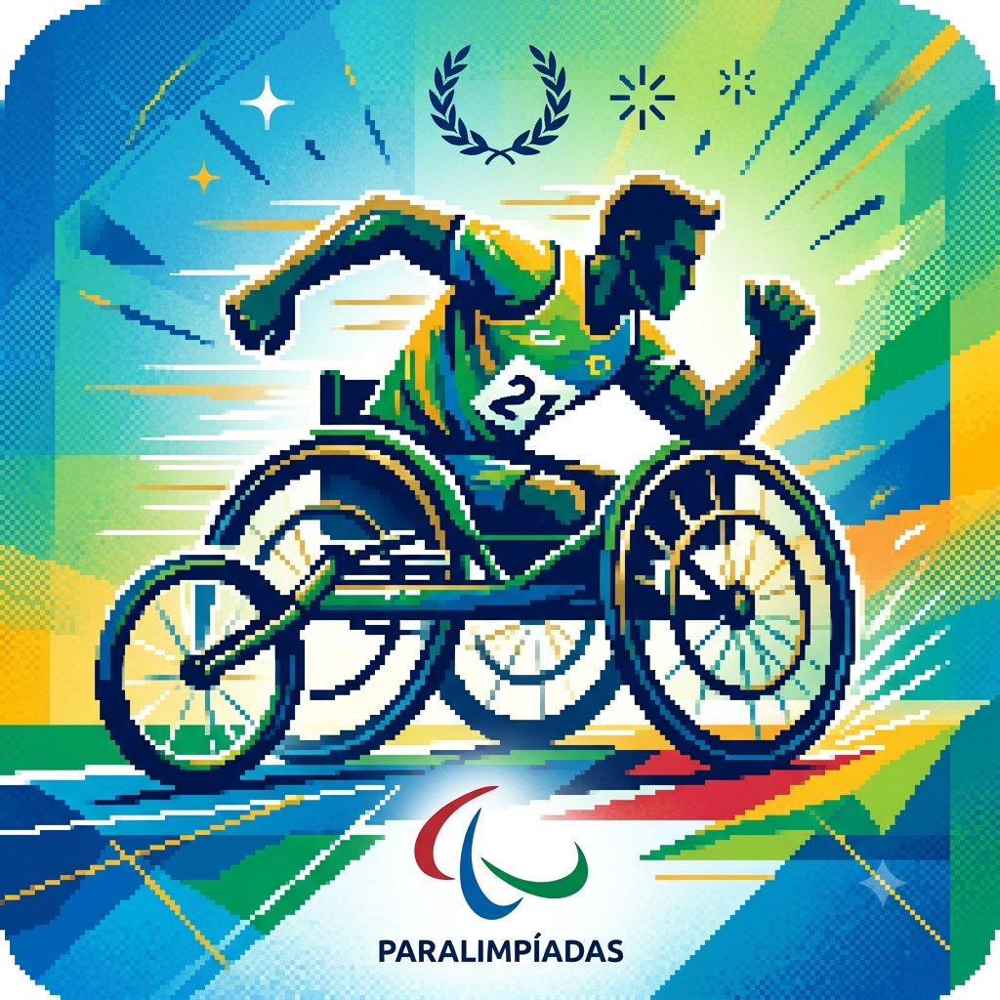

Meu primeiro post
Por: Heitor W. Monteiro Santos
Sejam bem-vindos a minha página de ensinamentos! Aqui vou te ensinar tudo que sei sobre "Jogos paralímpicos" e os ensinamentos que levei para minha vida.
Irei compartilhar todos meus conhecimentos, ensinamentos e saberes, que aprendi assistindo jogos paralímpicos

Por: Heitor W. Monteiro Santos
Sejam bem-vindos a minha página de ensinamentos! Aqui vou te ensinar tudo que sei sobre "Jogos paralímpicos" e os ensinamentos que levei para minha vida.
Por: Heitor W. Monteiro dos Santos
"Os Jogos Paralímpicos são um dos maiores e mais inspiradores eventos de esporte de alto rendimento do planeta. Criado inicialmente para reabilitar veteranos de guerra, o evento hoje acompanha atletas de elite do mundo inteiro enquanto eles superam recordes mundiais e quebram barreiras físicas e sociais nas pistas, quadras e piscinas, mostrando a máxima potência do corpo e da mente".
Por: Heitor W. Monteiro dos Santos
"Os Jogos Paralímpicos representam o auge do esporte global, reunindo atletas com deficiência visual, física ou intelectual para competir no mais alto nível de performance. Mais do que uma celebração atlética, o evento é um marco constante de inovação tecnológica, acessibilidade e quebra de estigmas sociais".